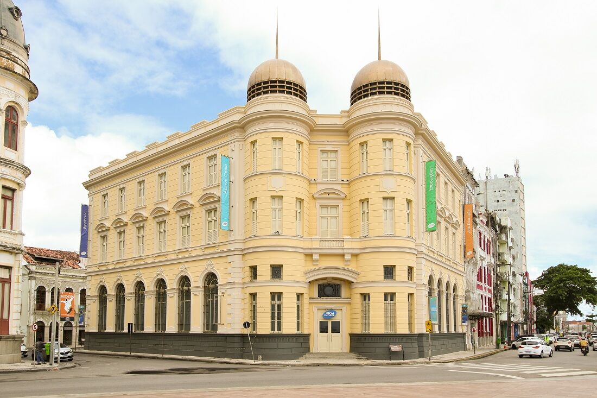

Caixa cultural do Recife
Conheça a Caixa Cultural, um prédio que preserva detalhes da antiga Bolsa de Valores
Estrutura localizada no Bairro do Recife oferece arte, lazer e história
É no antigo prédio da Bolsa de Valores de Pernambuco e da Paraíba, considerado cartão-postal do Centro histórico, que a Caixa Cultural oferece arte, lazer e educação desde 2012. Dois pavimentos abrigam o acervo, com destaque para peças arqueológicas, que contam a história da Capital, bem como a desse edifício de 1912.
No térreo, o piso de vidro deixa à mostra as ruínas do Recife de séculos passados. São mais de 11 mil peças, incluindo materiais de construção, cravos de ferro, pedras e até ossos.
VALE OBSERVAR
O cofre que faz parte da primeira planta do prédio guardava documentos como ações e notas de dinheiro. Também um antigo elevador em madeira de lei brasileira.
DICA EXTRA
Grupos podem agendar visitas guiadas, gratuitamente. Boa parte das peças possuem audiodescrição.